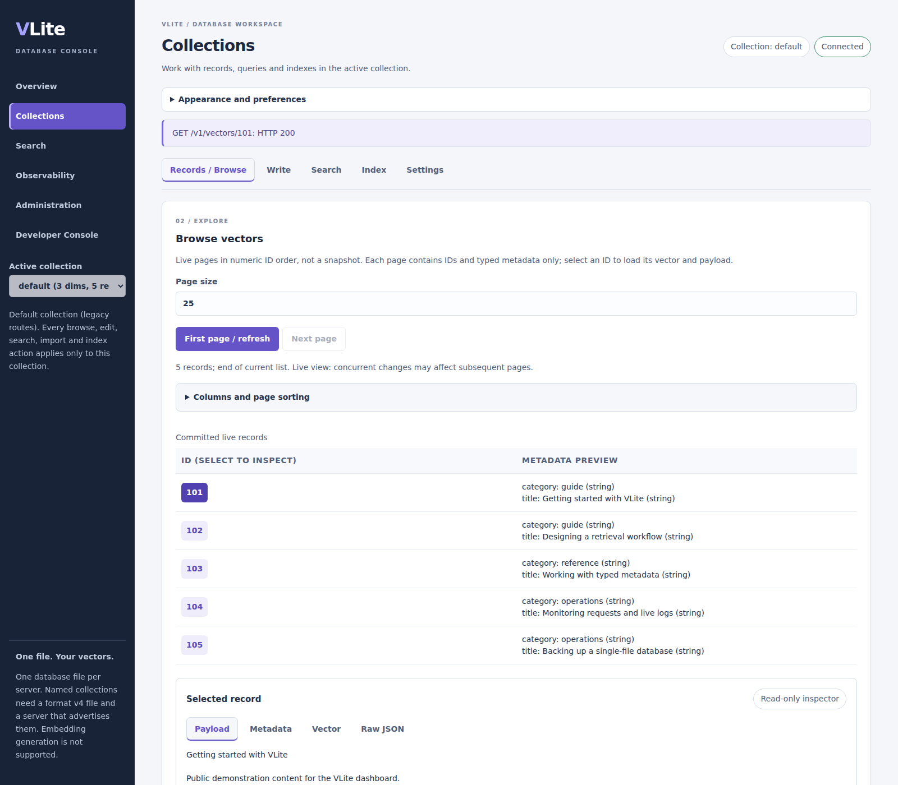

Embedded
In your application's process
Use Rust, Python, Node.js or C bindings for local-first applications and private retrieval without a separate database service.
Start with an embedded example →A single-file vector database. Embed retrieval in your application without a separate database service, or self-host the same engine behind REST and gRPC.
Start in-process with Python, Node.js or Rust, or run the API and dashboard yourself.
# Python 3.11+; run in a fresh directory # python -m pip install vlite-embedded==0.4.1 from vlite_embedded import NativeLibrary native = NativeLibrary() with native.create("documents.vlite", dimensions=3) as db: db.put("10", [1, 0, 0]) print(db.search([0.9, 0.1, 0], 5))
// npm install ./vlite-embedded-0.4.1-<platform>.tgz (release tarball) import { NativeLibrary } from "@vlite/embedded"; const native = new NativeLibrary(); try { const db = await native.create("documents.vlite", 3); await db.put("10", [1, 0, 0]); console.log(await db.search([0.9, 0.1, 0], 5)); } finally { await native.close(); }
// Cargo.toml: vlite = { git = "https://github.com/mahpate/Vlite", tag = "v0.4.1" } use vlite::Database; fn main() -> vlite::Result<()> { let mut db = Database::create("vectors.vlite", 3)?; db.put(10, &[1.0, 0.0, 0.0], b"document A")?; let hits = db.search(&[0.9, 0.1, 0.0], 5)?; assert_eq!(hits[0].id, 10); db.close() }
# Linux or WSL; Docker required git clone https://github.com/mahpate/Vlite && cd Vlite mkdir -m 700 -p .secrets && head -c 32 /dev/urandom | base64 | tr -d '=+/\n' > .secrets/api-token chmod 644 .secrets/api-token docker compose --profile dashboard up --build -d dashboard # Dashboard: http://localhost:8081 API: http://localhost:18084 cat .secrets/api-token # paste into the dashboard connection field
# PowerShell on Windows with Docker inside WSL git clone https://github.com/mahpate/Vlite; cd Vlite .\scripts\devbox.ps1 # pulls v0.4.1 API + dashboard images .\scripts\devbox.ps1 -Token # copies the API token to the clipboard # Dashboard: http://localhost:8082 API: http://localhost:18085
Supply your own embeddings; these examples use three-dimensional sample vectors. See API examples and the installation guide for package and platform details.
Browse collections, inspect records and run searches in your own VLite dashboard.

Two deployment paths, the same Rust storage engine.
Use Rust, Python, Node.js or C bindings for local-first applications and private retrieval without a separate database service.
Start with an embedded example →Give your clients an authenticated API, with a dashboard, scoped credentials and server observability. You operate the service.
Deployment guide →Language bindings: Rust, Python, Node.js and C; a separate WASM surface is also available. API coverage and platform support vary by package. Check the installation matrix.
Core retrieval and storage, with opt-in features for more demanding workflows. Follow each guide for build, format and configuration requirements.
Checksummed frames and synchronization before successful writes. Single-collection atomic batches support up to 4,096 operations.
Storage contract →Dense and sparse vectors, typed filters, BM25 hybrid ranking, grouped search and recommendations.
Retrieval guide →Optional HNSW and snapshots, scalar u8 quantization, metadata indexes, disk-ANN sidecars and opt-in GPU exact L2.
Index lifecycle →Collections, expiry, resumable re-embedding and imports. Point-in-time restore, change feeds and log-shipped read replicas.
Storage features →Opt-in encryption at rest, scoped credentials, quotas and TLS configuration. Verify deployment settings before remote access.
Security guide →Metrics, optional tracing, backups and maintenance tools. The live log tail is bounded and memory-only, not a durable audit archive.
Operations guide →Corruption fails closed. Incomplete trailing writes require explicit repair; committed data is never silently discarded. Search indexes remain rebuildable from stored records.
VLite keeps the live dataset in memory and replays the log on open. A file supports one exclusive owner or multiple shared read-only owners. Size deployments for the full dataset. Optional indexes and maintenance can use sidecars. Filesystem and directory-entry durability have platform-specific limitations; process-crash tests are not physical power-loss qualification.
Benchmark comparisons retain their original versions and measurement provenance. Historical results are not presented as freshly rerun v0.4.1 measurements.
Start with a local file, then choose the retrieval and deployment options your application needs.